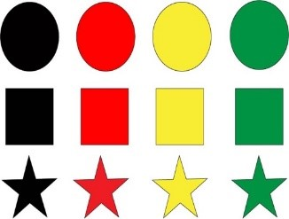
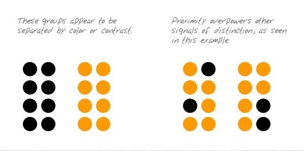
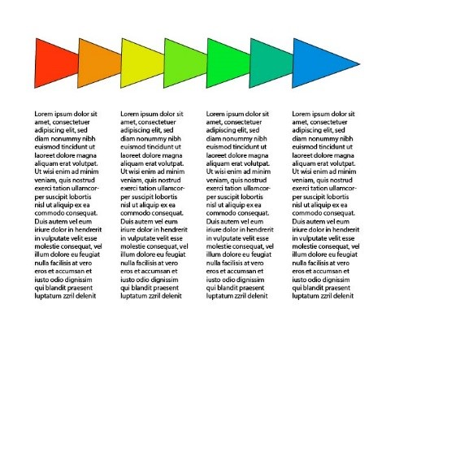
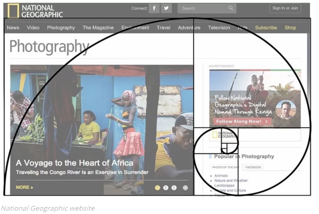
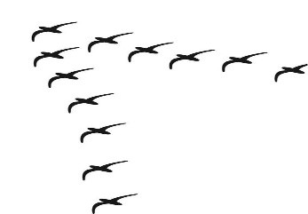
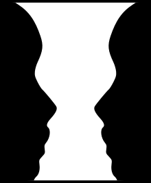
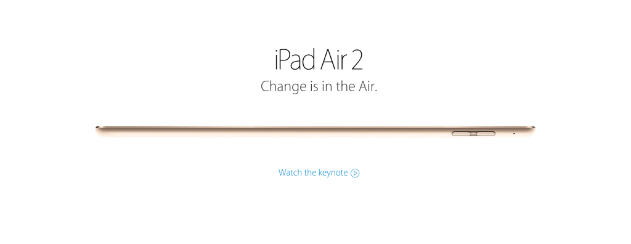
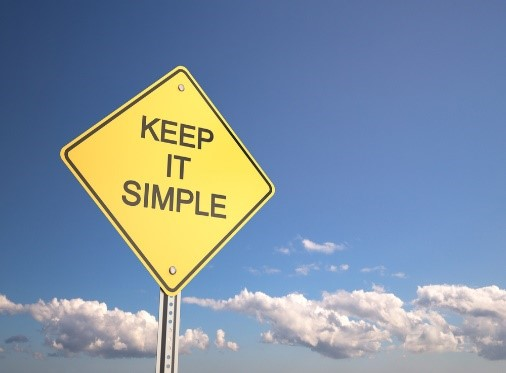

Similaritiy er ligheder mellem form, størrelser og farver. Når man designer hjemmesider, vil man sørge for at have visuelle ledetråde i forhold til hvilke elementer der er relaterede.
Det er vigtigt at elementerne har samme form og står tæt sammen
Den simpleste form for symmetri er refleksions symmetri (undertiden kaldet linje symmetri eller mirror symmetri). Det er let at se, fordi den ene halvdel er refleksionen af den anden halvdel.
Også kaldet continuity på engelsk. Det er et begreb som betyder at objekter arrangeret på line eller kurve er relateret til hinanden. Øjnene vil automatisk følge den mest glidende retning.
The golden section er en beregning der kan skabe et naturligt og harmonisk layout. For at forstå hvordan 'the golden section' kan anvendes i praksis kræver det lidt forståelse for matematikken bag.
Ved common fate afhænger det af hvilken retning elementerne bevæger sig, hvis elementerne bevæger sig samme retning eller bare bevæger sig på samme måde vil de virke mere relaterede end hvis de bevægede sig i forskellige retninger.
Forgrunden er vigtigere end baggrunden og man bruger baggrunden for at identificere forgrunden. Der kan godt gå et øjeblik før man opfanger hvad der er på et billede, alt afhængigt af hvad vores øjne fokuserer på først.
Man kunne godt tro white space er noget der skulle udryddes. Tværtimod white space er alt bag indholdet og kan fx få et produkt til at se mere elegant ud, havde man skrevet en pris eller mere tekst på billedet forneden, havde det ikke været lige så smukt.
Grids: Grids bruges til at opdele og organisere indhold, ens farver hører sammen og man ligger kun mærke til det, hvis det ikke er der.
Er meget brugervenligt, loven går ud på at holde ting simpelt så fokusset ligger på det vigtige.
